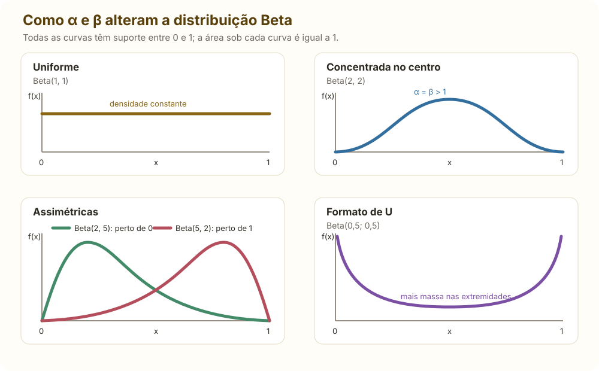

Síntese direta dos capítulos 1 a 7 de Introduction to
Probability, Statistics, and Random Processes, de Hossein
Pishro-Nik. Esta página cobre somente probabilidade; inferência
estatística, estimação, intervalos de confiança, testes e regressão não
fazem parte deste resumo.
1. Fundamentos
Experimento, espaço
amostral e eventos
Experimento aleatório: procedimento cujo resultado
não é conhecido de antemão.
Espaço amostral
:
conjunto de todos os resultados possíveis.
Evento: subconjunto
.
Complemento:
.
União:
,
ocorre pelo menos um dos eventos.
Interseção:
,
ocorrem ambos.
Eventos disjuntos:
.
Leis de De Morgan:
Axiomas e identidades
na última igualdade, para eventos
disjuntos. Consequências:
Em um espaço finito equiprovável,
.
Probabilidade
condicional, independência e Bayes
Para
:
Se
é uma partição de
,
o denominador pode ser calculado pela lei da probabilidade total:
Em particular, usando a partição
:
ou, como
,
Regra da cadeia:
Os eventos
e
são independentes quando
Independência condicional dado
:
Se
é uma partição de
,
então:
Em Bayes,
é a priori,
é a verossimilhança,
é a evidência e
é a posteriori.
2. Contagem
Situação: escolher
posições a partir de
tipos
Número de resultados
Ordem importa, com repetição
Ordem importa, sem repetição
Ordem não importa, sem repetição
Ordem não importa, com repetição
Permutações de
objetos com grupos repetidos de tamanhos
:
Coeficiente multinomial:
Identidades úteis:
3. Uma variável aleatória
Uma variável aleatória é uma função
.
Seu suporte é o conjunto de valores que pode assumir.
Caso discreto
Nos pontos de massa:
Caso contínuo
Quando
é derivável no ponto
,
a densidade é a derivada da função de distribuição acumulada:
Para uma variável contínua,
.
A densidade
não é uma probabilidade pontual e pode ser maior que 1; probabilidades
são obtidas pela área sob a densidade em um intervalo.
Toda CDF é não decrescente, contínua à direita e satisfaz
Esperança, momentos e
variância
Para
:
Transformações
Se
,
no caso discreto:
No caso contínuo, se
é estritamente monótona:
Com vários ramos
que satisfazem
:
Quantis
O quantil de ordem
,
com
,
é o valor
abaixo do qual está uma proporção
da probabilidade. Se
é contínua e estritamente crescente:
Para qualquer CDF, inclusive quando há saltos ou trechos planos,
usa-se a definição generalizada:
O operador
significa ínfimo: o menor limite inferior do conjunto.
Em uma distribuição discreta, essa mesma ideia normalmente pode ser
escrita de forma mais intuitiva como
em que
é o suporte de
.
Assim,
é o primeiro valor em que a probabilidade acumulada alcança ou
ultrapassa
.
A mediana é
;
os quartis são
,
e
.
4. Distribuições essenciais
Discretas
Distribuição e suporte
PMF
Média
Variância
Bernoulli
,
Binomial
,
Geométrica
,
Binomial negativa
:
ensaio do
-ésimo
sucesso
Poisson
,
Hipergeométrica
Quando usar cada
distribuição discreta
Distribuição
Use quando a variável representa
Características principais
Bernoulli
O resultado de um único ensaio: sucesso ou fracasso
Apenas
ou
;
parâmetro
Binomial
O número de sucessos em
ensaios independentes, todos com o mesmo
Número
fixo de ensaios; há reposição ou independência equivalente
Geométrica
O número de ensaios até o primeiro sucesso
Suporte começa em
;
possui a propriedade sem memória
Binomial negativa
O número de ensaios até o
-ésimo
sucesso
Generaliza a geométrica;
é fixo e os ensaios têm o mesmo
Poisson
O número de ocorrências em um intervalo de tempo, comprimento, área
ou volume
Taxa média constante e ocorrências independentes; média e variância
iguais a
Hipergeométrica
O número de sucessos em
retiradas sem reposição de uma população finita
As retiradas são dependentes; use
para o tamanho da população e
para o total de sucessos
Para um processo com taxa
por unidade e intervalo de tamanho
,
o parâmetro da contagem de Poisson é
.
Aproximações frequentes:
Na aproximação normal de uma variável inteira, use a correção de
continuidade; por exemplo,
Propriedade sem memória da geométrica:
Contínuas
Distribuição
PDF no suporte
Média
Variância
Uniforme
Exponencial
Normal
Gamma forma–taxa
Erlang
,
Beta
,
Qui-quadrado
Cauchy padrão
não existe
não existe
Parâmetros da Gamma e da
Erlang
O símbolo
no denominador da PDF é a função Gamma, não uma nova
variável nem uma probabilidade. Ela funciona como constante de
normalização, fazendo a área total sob a densidade ser igual a
:
Ela generaliza o fatorial. Para inteiros positivos,
Na parametrização forma–taxa, usada nesta
página:
é a forma: controla o formato e a assimetria da curva.
Na Erlang, a forma é o inteiro
,
correspondente ao número de etapas ou eventos aguardados;
é a taxa, com unidade inversa à de
.
Na interpretação de espera de um processo de Poisson, ela mede quantos
eventos são esperados por unidade de tempo. Quanto maior
,
menor tende a ser o tempo de espera;
a média e a variância são
e
.
Alguns livros usam a parametrização forma–escala. A
escala
tem a mesma unidade de
;
na interpretação de espera, representa o tempo médio por etapa. Ela é o
inverso da taxa:
Com escala, a mesma densidade é escrita como
e
Portanto, antes de usar uma fórmula Gamma, verifique se o segundo
parâmetro é uma taxa
ou uma escala
.
Quando usar cada
distribuição contínua
Distribuição
Use quando a variável representa
Características principais
Uniforme
Um valor em
sem preferência por nenhuma região do intervalo
Densidade constante e suporte limitado
Exponencial
O tempo até a primeira ocorrência de um processo de Poisson ou uma
duração com taxa de falha constante
Positiva, assimétrica à direita e sem memória
Gamma
Um tempo ou uma quantidade positiva cuja forma pode variar além do
modelo exponencial
pode ser qualquer número positivo; quando
é inteiro, é uma soma de exponenciais de mesma taxa
Erlang
O tempo até o
-ésimo
evento de um processo de Poisson
Caso Gamma com forma inteira
;
soma de
exponenciais independentes de mesma taxa
Normal
Uma medida aproximadamente simétrica ou a soma/média de muitos
efeitos pequenos
Determinada por
e
;
simétrica e fechada sob combinações lineares independentes
Beta
Uma proporção ou probabilidade limitada ao intervalo
Muito flexível: pode ser uniforme, simétrica, assimétrica ou em
forma de U
Qui-quadrado
Uma soma de quadrados de normais padrão independentes
Positiva e assimétrica à direita; torna-se menos assimétrica com
mais graus de liberdade
Cauchy
Um fenômeno com caudas extremamente pesadas, como a razão de duas
normais padrão independentes
Não possui média nem variância; a média amostral não se estabiliza
como no caso usual
A função Beta que aparece na densidade de
é
Exponencial:
Normal e padronização:
Exemplo numérico de
padronização
Suponha que
Aqui,
,
e, portanto, o desvio-padrão é
.
A variável padronizada é
Por exemplo, o valor
corresponde a
Isso significa que
está a dois desvios-padrão acima da média. Para calcular
,
padronizamos os dois limites:
Logo,
Portanto, a probabilidade de
ficar entre
e
é aproximadamente
.
Regra 68–95–99,7%: aproximadamente 68%, 95% e 99,7% da massa normal
ficam a 1, 2 e 3 desvios-padrão da média.
Gamma representa, entre outras aplicações, o tempo até o
-ésimo
evento de um processo de Poisson quando
é inteiro (Erlang). Se
é o tempo até o
-ésimo
evento:
Como as distribuições se
relacionam
Bernoulli, Binomial, Geométrica e Binomial negativa.
Se
são Bernoulli independentes com o mesmo
,
então
Cada Bernoulli registra se houve sucesso em um
ensaio. Somar
indicadores Bernoulli equivale a contar quantos sucessos ocorreram nos
ensaios, produzindo a Binomial.
A Geométrica espera apenas o primeiro sucesso. A
Binomial negativa repete essa espera até acumular
sucessos; por isso, a Geométrica é o caso
,
e a soma de
esperas geométricas independentes com o mesmo
tem distribuição Binomial negativa.
Poisson, Exponencial, Gamma e Erlang. Em um processo
de Poisson de taxa
:
em que
são os tempos independentes entre eventos e
é o tempo até o
-ésimo
evento. Assim, Poisson conta quantos eventos ocorreram,
enquanto Exponencial, Erlang e Gamma modelam quanto
tempo se espera.
Em outras palavras:
responde “quantos eventos ocorreram até o tempo
?”;
responde “quanto tempo até o primeiro evento?”;
responde “quanto tempo até completar
eventos?”.
Por isso, “o
-ésimo
evento ocorreu até
”
e “pelo menos
eventos ocorreram até
”
descrevem exatamente o mesmo acontecimento:
Corrida entre duas exponenciais. Se
são independentes, então:
Analogamente,
Relações particulares da família Gamma:
Se
e
são independentes e têm a mesma taxa:
A Exponencial representa uma única etapa de espera. A Erlang soma um
número inteiro
dessas etapas. A Gamma mantém a mesma estrutura, mas permite qualquer
forma
,
oferecendo maior flexibilidade. Ao somar Gammas independentes de
mesma taxa, as formas se somam; se as taxas forem
diferentes, essa regra simples não vale.
O Qui-quadrado também pertence à família Gamma: seus graus de
liberdade
determinam a forma
,
enquanto sua taxa é
.
Normal e Qui-quadrado. Se
são normais padrão independentes:
Somas de normais independentes continuam normais: as médias se somam
e, por independência, as variâncias também. Já elevar normais padrão ao
quadrado elimina o sinal e produz parcelas positivas; a soma de
desses quadrados gera um Qui-quadrado com
graus de liberdade.
A Normal também surge aproximadamente para somas e médias de muitas
variáveis, mesmo que as parcelas originais não sejam normais, pelas
condições do Teorema Central do Limite.
Beta e Uniforme.
Na Beta, os parâmetros
e
controlam onde a densidade se concentra. Com
,
não há região preferida e surge a Uniforme em
.
Se
,
há maior concentração perto de
;
se
,
perto de
.
Quando ambos são maiores que
,
a massa tende ao interior; quando ambos são menores que
,
tende às extremidades.

A Beta(1,1) é uniforme; parâmetros maiores que 1 podem concentrar a
massa no interior, parâmetros desiguais deslocam a concentração e
parâmetros menores que 1 favorecem as extremidades.
Binomial, Hipergeométrica, Poisson e Normal.
A Hipergeométrica usa retiradas sem reposição. Quando a amostra é
pequena diante da população, retirar um item quase não altera as
probabilidades seguintes; por isso ela se aproxima de
.
A Binomial se aproxima da Poisson quando há muitos ensaios, cada
sucesso é raro e
permanece em uma escala moderada. A Poisson simplifica a contagem desses
eventos raros.
A Binomial se aproxima da Normal quando as quantidades esperadas de
sucessos,
,
e fracassos,
,
são suficientemente grandes. Nesse caso, a distribuição discreta fica
aproximadamente simétrica e em forma de sino.
Exemplo — defeitos raros. Uma fábrica produz
peças, e cada peça tem probabilidade
de apresentar defeito, independentemente das demais. Se
é o número de peças defeituosas:
A probabilidade binomial exata de encontrar exatamente três peças
defeituosas é
Como
é grande,
é pequeno e
,
podemos usar
:
Os resultados são muito próximos: aproximadamente
pela Binomial e
pela Poisson. A vantagem da Poisson é substituir o coeficiente
por uma conta bem mais simples.
Variáveis mistas
Uma variável mista combina massas
e uma parte contínua
:
Usando a delta de Dirac, a parte discreta também pode ser escrita
dentro de uma “densidade generalizada”:
5. Distribuições conjuntas
Funções conjuntas e
marginais
Caso discreto:
Caso contínuo:
Condicionais:
Independência:
Esperança conjunta e
condicional
ou a integral dupla correspondente. A esperança é linear sem exigir
independência:
Para valores com probabilidade ou densidade marginal positiva:
Lei da esperança total:
Lei da variância total:
Covariância e correlação
Independência implica covariância zero quando os momentos existem; o
inverso não vale em geral. Para variáveis conjuntamente normais,
covariância zero implica independência.
Normal bivariada
Se
e
são conjuntamente normais, com médias
,
desvios-padrão
e correlação
,
,
então:
As marginais são normais. Nesse modelo,
equivale à independência entre
e
.
Somas, extremos
e transformações bidimensionais
Para
,
com
independentes:
Fechamentos úteis para variáveis independentes:
Máximo e mínimo de duas
variáveis
Defina
Para o máximo ser menor ou igual a
,
as duas variáveis precisam ser menores ou iguais a
:
Logo, em geral,
Se
e
são independentes, a CDF do máximo é
Para o mínimo ser maior que
,
as duas variáveis precisam ser maiores que
:
Assim, para variáveis independentes,
e, tomando o complemento,
Se
e
são contínuas e independentes, basta derivar as CDFs para obter as
densidades:
Portanto, o procedimento é: encontre
e
,
verifique a independência, monte a CDF do máximo ou mínimo e derive
somente se a questão pedir a PDF.
Sem independência, não se pode multiplicar as CDFs. Para variáveis
contínuas com densidade conjunta:
Exemplo. Se
são independentes, então, para
,
.
Portanto:
O máximo se concentra mais perto de
,
enquanto o mínimo se concentra mais perto de
.
Para mais de duas variáveis independentes, as mesmas ideias se
generalizam:
Se
é uma transformação bijetiva diferenciável, com inversa
:
6. Várias
variáveis, MGF e função característica
Para um vetor aleatório
:
Se
:
Função geradora de momentos
Se existe em uma vizinhança de zero:
Para variáveis independentes:
MGFs úteis:
Distribuição
Bernoulli
Binomial
Poisson
Exponencial de taxa
Gamma forma–taxa
Erlang
Normal
Função característica
Ela sempre existe, determina a distribuição e, para
independentes,
Quando os momentos existem,
7. Limites para probabilidades
União e Bonferroni
Markov e Chebyshev
Se
e
:
Se
e
:
Chernoff
Para
e MGF finita:
portanto o melhor limite dessa forma é
Cauchy–Schwarz e Jensen
Se
é convexa:
Para
côncava, a desigualdade de Jensen se inverte.
8. Leis limite e convergência
Lei dos Grandes Números
Se
são i.i.d. e
,
então:
Equivalentemente, para todo
:
Teorema Central do Limite
Se, além disso,
:
Para
grande:
Modos de convergência
Em distribuição:
se
em todo ponto de continuidade de
.
Em probabilidade:
se, para todo
,
.
Em média quadrática:
se
.
Quase certamente:
se
.
Implicações principais:
As recíprocas não valem em geral. Quando o limite é uma constante,
convergência em distribuição implica convergência em probabilidade.
9. Checklist de aplicação
Defina o experimento, o suporte e os eventos antes de calcular.
Verifique se os resultados são equiprováveis antes de usar
favoráveis/total.
Em contagem, determine se a ordem importa e se há reposição.
Diferencie eventos disjuntos de eventos independentes.
Em condicionamento, identifique o mecanismo que produziu a
informação.
Em Bayes, inclua as probabilidades a priori e todos os termos da
evidência.
Escolha a distribuição pelo mecanismo gerador, não pelo formato da
fórmula.
Declare a parametrização de Exponencial e Gamma: taxa ou
escala.
Em densidades conjuntas, determine a região de suporte antes dos
limites de integração.
Não conclua independência apenas a partir de covariância ou
correlação zero.
Para somas, verifique independência antes de somar variâncias ou
multiplicar MGFs.
Use uma distribuição exata simples antes de recorrer ao TCL.
Confira se o resultado final está entre 0 e 1 e se unidades e
suporte fazem sentido.